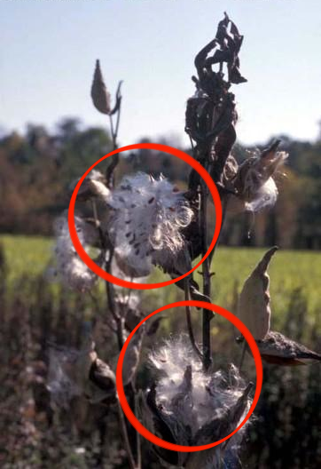
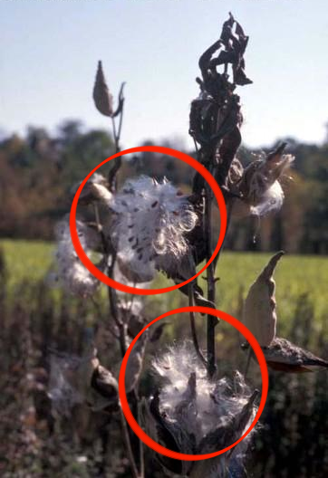

Common Catsear (Hypochaeris radicata)
Common catsear has leaves that are densely hairy and can be toothed or irregularly lobed. Commons catsear does not have typical stems, but rather leafless flower stalks which can have 2 to 7 flowers each. The flowers are bright yellow, with the many petals emanating from the center. Catsear petals have distinctive toothing at the tips of the petals.


 
